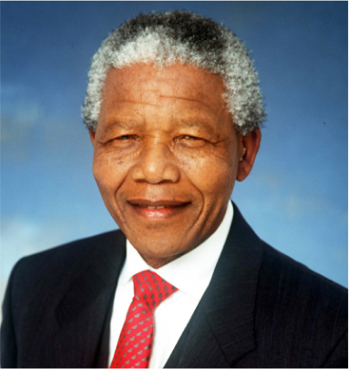
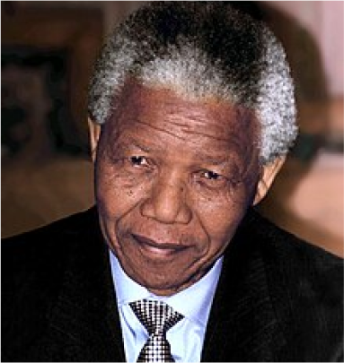

Nelson Mandela (1918-2013)
Nelson Rolihlahla Mandela (Born Rolihlahla Mandela; 18 July 1918-5 December
2013) Was A South African Anti-Apartheid Activist And Politician
Who Served As The First President Of South Africa From 1994 to 1999.
He Was The Country's First Black Head Of State And The First Elected In A Fully
Representative Democratic Election. His Government Focused On Dismantling T He Legacy Of Apartheid By
Fostering Racial Reconciliation.
Ideologically An African Nationalist And Socialist,
He Served As The President Of The African National Congress (ANC) Party From 1991 To 1997
"I never lose
I either win or learn"
Mandela Served 27 Years In Prison, Split Between Robben Island, Pollsmoor Prison And Victor Verster Prison. Amid
Growing Domestic And International Pressure And Fears Of Racial Civil War, President F. W. De Klerk Released Him
In 1990.
Mandela And De Klerk Led Efforts To Negotiate An End To Apartheid, Which Resulted In The 1994 Multiracial
General
Election In Which Mandela Led The ANC To Victory And Became President. Leading A Broad Coalition Government
Which
Promulgated A New Constitution, Mandela Emphasised Reconciliation Between The Country's Racial Groups And
Created
The Truth And Reconciliation Commission To Investigate Past Human Rights Abuses. Economically, His
Administration
Retained Its Predecessor's Liberal Framework Despite His Own Socialist Beliefs, Also Introducing Measures To
Encourage Land Reform, Combat Poverty And Expand Healthcare Services. Internationally, Mandela Acted As Mediator
In The Pan Am Flight 103 Bombing Trial And Served As Secretary-General Of The Non-Aligned Movement From 1998 To
1999. He Declined A Second Presidential Term And Was Succeeded By His Deputy, Thabo Mbeki. Mandela Became An
Elder
Statesman And Focused On Combating Poverty And HIV/AIDS Through The Charitable Nelson Mandela Foundation.

